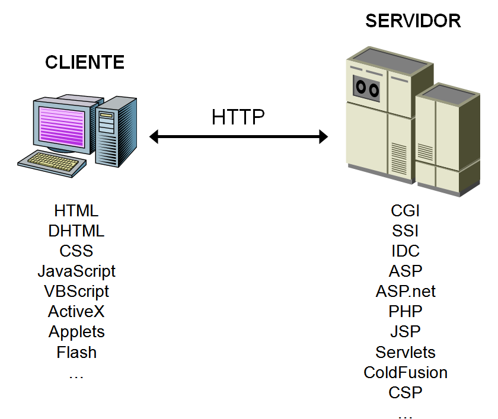

ÍNDICE
Analizando el mercado actual de Bases de Datos, el uso de los diferentes productos existentes se ha segmentado.
| Usuarios BD | Bases de datos |
|---|---|
| Grandes Empresas | La mayoría han apostado por Oracle por su seguridad y soporte. |
| Pequeñas y medianas Empresas (PYMES) | Aquí es donde más abierto está el mercado. Entre las más utilizadas están: Oracle Express, SQL Server de Microsoft, MySQL Server y PostgreSQL |
| Pequeños negocios | Utilizan software propietario que utiliza SGBD con prestaciones de tipo ofimático como Microsoft Access. |
| Aplicaciones y páginas web | La mayoría de los proveedores de internet tienen incluido en sus ofertas MySQL y PostgreSQL, pero los usuarios suelen usar MySQL. |
Aunque los aspectos fundamentales a la forma de utilizar un SGBD son muy parecidos, en este curso nos hemos centrado en MySQL.
MySQL es un sistema de gestión de bases de datos SQL (SGBD DBMS) multihilo y multiusuario que tiene más de 10 millones de instalaciones según MySQL AB de Oracle (https://es.wikipedia.org/wiki/MySQL_AB).
Las librerías para acceder a bases de datos MySQL están disponibles en los principales lenguajes de programación con APIs específicas de lenguaje. Además,una interfaz ODBC llamada MyODBC permite utilizar lenguajes de programación adicionales que soportan la interfaz ODBC para comunicarse con una base de datos MySQL. El servidor MySQL y las bibliotecas oficiales se implementan principalmente en ANSI C.
MySQL es popular para aplicaciones web y actúa como el componente de base de datos de las plataformas LAMP, MAMP y WAMP (Linux/Mac/Windows-Apache-MySQL-PHP/Perl). Su popularidad como aplicación web está estrechamente ligada a la popularidad de PHP, que a menudo se combina con MySQL. PHP y MySQL son componentes esenciales para ejecutar la popular plataforma de Gestor de Cotnenidos WordPress.
La arquitectura cliente-servidor es un modelo de diseño de software en el que las tareas se reparten entre los proveedores de recursos o servicios, llamados servidores, y los demandantes, llamados clientes.
Un cliente realiza peticiones a otro programa, el servidor, quien le da respuesta. Esta idea también se puede aplicar a programas que se ejecutan sobre una sola computadora, aunque es más ventajosa en un sistema operativo multiusuario distribuido a través de una red de computadoras.
Cuando utilizamos un navegado en Internet y accedemos a un servidor mediante una dirección web, utilizamos el protocolo HTTP o HTTPS para enviar información del cliente al servidor y viceversa.
Tanto cliente como servidor ejecutan código y por lo tanto, procesan las instrucciones de programas y aplicaciones, y para ello se utilizan diferentes lenguajes de programación. A continuación se muestran algunos ejemplos:

Puedes consultar el Tiobe Index de los lenguajes de programación más usados en: https://www.tiobe.com/tiobe-index/
Puedes consultar la web del Instituto de Ingeniería Eléctrica y Electrónica (Institute of Electrical and Electronics Engineers o IEEE), que con más de 425.000 miembros y voluntarios en 160 países, también publica su propia lista de lenguajes de programación más populares (se puede filtrar por Web):
https://spectrum.ieee.org/static/interactive-the-top-programming-languages-2018
Los SGBD relacionales usan SQL como lenguaje de DCL, DDL y DML.
En las unidades anteriores hemos trabajado tanto el DDL como el DML.
Las bases de datos relacionales poseen unas extensiones del lenguaje de consultas SQL que les permiten crear bloques de código que se ejecutan como un todo. Hay dos tipos de bloques de código:
Todas las bases de datos relacionales permiten alamacenar código aunque la extemsión del lenguaje tiene una denominación diferente dependiendo del SGBD; en Oracle se llama PL/SQL, en SQL Server Transact-SQL y en MySQL Stored Procedure Programming.
En este tema nos centraremos en MySQL para trabajar con programación a través de procedimientos, funciones y tratamiento de eventos.
Los procedimientos almacenados y funciones son nuevas funcionalidades incluidas desde la versión de MySQL 5.0.
Algunas situaciones en que los procedimientos almacenados pueden ser particularmente útiles:
Los procedimientos almacenados pueden mejorar el rendimiento ya que se necesita enviar menos información entre el servidor y el cliente. El inconveniente es que aumenta la carga del servidor de la base de datos ya que la mayoría del trabajo se realiza en la parte del servidor y no en el cliente. Considere esto, si muchas máquinas cliente (como servidores Web) se sirven a sólo uno o pocos servidores de bases de datos.
Los procedimientos almacenados le permiten tener bibliotecas o funciones en el servidor de base de datos. Esta característica es compartida por los lenguajes de programación modernos que permiten este diseño interno, por ejemplo, usando clases. Usando estas características del lenguaje de programación cliente es beneficioso para el programador incluso fuera del entorno de la base de datos.
Comenzaremos por crear nuestro primer script en MySQL con sentencias de Stored Procedures.
Utilizaremos SELECT para mostrar resultados y SET para guardar valores en variables.
Los scripts de MySQL se puede ejecutar directamente con el programa mysql.exe.
mysql.exe es una shell que conecta con el servidor de MySQL y permite ejecutar instrucciones de SQL. Cuando nos conectamos tenemos que indicar y contraseña si procede.
Para conectarnos como root hacemos:
C:\Program Files\MySQL\MySQL Server 8.0\bin> mysql -u root -p
Ejemplo 1
Scripts
Crear un script de nombre b06ejer01.sql en una carpeta de nuestro gusto,por ejemplo C:\GBD-UD06. El script calcula la superficie de una pared a partir del ancho y alto de la misma. El ancho y alto se cargan previamente en dos variables.
El script lo creamos con un editor de texto y su contenido es el siguiente:
-- En x tenemos el ancho de la pared
SET @x = 9;
-- En y tenemos la altura
SET @y = 15;
-- La instrucción select calcula y muestra la superficie de la pared conjuntamente con el ancho y la altura.
SELECT @x AS ancho, @y AS alto, @x * @y AS superficie;
El script se puede ejecutar directamente con el programa mysql.exe. Una vez que hayamos conectados utilizamos el comando source para ejecutar el script.
mysql> source C:/GBD-UD6/b06ejer01.sql;
Query OK, 0 rows affected (0.00 sec)
Query OK, 0 rows affected (0.00 sec)
+-------+------+------------+
| ancho | alto | superficie |
+-------+------+------------+
| 9 | 15 | 135 |
+-------+------+------------+
1 row in set (0.00 sec)
Los nombres de las variables en los scripts tienen que comenzar con el símbolo @.
Las instrucciones SET y SELECT pueden ejecutarse también directamente desde el intérprete de comandos.
Los comentarios dentro de los SCRIPTS pueden hacerse de la siguiente manera:
# comentario con almohadilla (solo una linea)
-- Comentario con dos guiones (solo una linea)
/* comentario con barra asterisco (solo una linea) */
/*
esto es
un comentario
multilinea
*/
Para definir una variable de usuario utilizaremos el carácter @. Asignaremos valores con el comando SET:
SET @num = 9, @cad = 'Hola';
SET @num := 9, @cad := 'Hola';
Y para mostrar sus valores la instrucción SELECT:
SELECT @num, @cad;
Las variables puede usarse en instrucciones SELECT de recuperación de datos, como:
SELECT * FROM ciudades WHERE codigo > @num;
También podemos calcular y asignar valor en la misma instrucción, almacenando resultados de nuestras SELECT, pero en este caso sólo funciona el operador :=. Si no deseamos que se produzca la salida del resultado, sino sólo almacenarlo, podemos usar la cláusula INTO:
Ejemplo 2
Scripts
Crear un script que asigne a la variable numreg la cantidad de ciudades que hay en la tabla ciudades.
-- Asigna el número de ciudades a la variable numreg y muestra el resultado por pantalla.
SELECT @numreg := COUNT(*) FROM ciudades;
-- Asigna el número de ciudades a la variable numreg pero NO muestra el resultado por pantalla.
SELECT COUNT(*) INTO @numreg FROM ciudades;
Para consultar todas las variables creadas por el usuario, podemos consultar la tabla performance_schema.user_variables_by_thread a partir de la versión 5.7 de MySQL:
SELECT * FROM performance_schema.user_variables_by_thread;
MySQL tiene muchas variables de sistema que pueden consultarse en https://dev.mysql.com/doc/refman/8.0/en/server-system-variable-reference.html y que podemos consultar con la instrucción SHOW VARIABLES LIKE.
SHOW VARIABLES LIKE '%';
Las variables de sistema pueden ser de tipo:
Para mostrar el valor de alguna variable global utilizaremos una doble @ tal como se muestra en este ejemplo con la variable max_connections.
SELECT @@max_connections;
Para asignar un nuevo valor a la variable GLOBAL utilizaremos una de las dos opciones siguientes:
SET GLOBAL max_connections = 50;
SET @@global.max_connections = 50;
Por ejemplo la variable lc_messages define el idioma en que se muestran los mensajes de error. Podríamos tener el valor en_US para tenerlos en inglés o es_ES para español.
Para asignar un nuevo valor a la variable de sistema de tipo SESSION utilizaremos una de las siguientes cuatro opciones mostradas en el ejemplo con la variable lc_messages.
SET lc_messages = 'es_ES';
SET SESSION lc_messages = 'es_ES';
SET @@lc_messages='es_ES';
SET @@local.lc_messages='es_ES';
Prueba a ejecutar las siguientes instrucciones después de conectar con mysql.exe y comprueba el resultado:
mysql> SET SESSION lc_messages='en_US';
mysql> MENSAJES;
ERROR 1064 (42000): You have an error in your SQL syntax; check
the manual that corresponds to your MySQL server version for the
right syntax to use near 'MENSAJES' at line 1
mysql> SET SESSION lc_messages='es_ES';
mysql> MENSAJES;
ERROR 1064 (42000): Algo está equivocado en su sintax cerca
'MENSAJES' en la linea 1
Ejemplo 3
Scripts
Crea un script que conecte con la base de datos world y guarde en una variable el número de registros de la tabla city y en otra el número de registros de la tabla country. Ejecutar un SELECT que muestre la cantidad de registros de las dos tablas.
El script b06ejer02.sql tendrá las siguiente instrucciones:
USE world;
SELECT @numCity := count(*) FROM city;
SELECT @numCountry := count(*) FROM country;
SELECT @numCity AS NREG_City, @numCountry AS NREG_Country;
Para ejecutar el script realizamos los siguientes comandos:
C:\> cd "\Program Files\MySQL\MySQL Server 8.0\bin\mysql"
C:\Program Files\MySQL\MySQL Server 8.0\bin\mysql> mysql -u root -p
mysql> source C:/GBD-UD6/b06ejer02.sql;
La mayoría de scripts los generamos en UTF8 por lo que deberemos cambiar el conjunto de caracteres de la ventana de comandos del CMD.
// Cambiar a juego de caracteres en UTF8
C:\> chcp 65001
// Cambiar a juego de caracteres en ANSI West European Latin
C:\> chcp 1252
Para cambiar en timepo real el juego de caracteres en el resultado de los SELECT en MySQL, podemos utilizar el comando SET NAMES.
// Cambiar a juego de caracteres en UTF8
mysql> SET NAMES 'utf8';
// Cambiar a juego de caracteres en ANSI West European Latin
mysql> SET NAMES 'latin1';
El comando mysql dispone además de muchos parámetros. Usaremos algunos:
| Parámetro | Descripción |
|---|---|
| --silent | En el modo silencioso no muestra tantos mensajes |
| --table | La salida de los SELECT la muestra en formato tabla |
| --html | La salida de los SELECT la muestra en formato HTML |
Ejemplo de forma de conexión.
//Conectarse como root en modo silencioso
C:\> mysql -u root -p --silent --table
Para poder almacenar un conjunto de instrucciones en la propia base de datos podemos utilizar los procedimientos.
La sintaxis más sencilla es la siguiente:
DELIMITER //
CREATE PROCEDURE nombre()
BEGIN
instrucciones;
END //
DELIMITER ;
Antes de comenzar debemos seleccionar la base de datos con la que vamos a trabajar. Por ejemplo para trabajar con la base de datos world ejecutaríamos:
USE world;
Si por ejemplo deseamos un procedimiento que muestre el día y hora sería:
Ejemplo 1
Procedimientos
Realizar un procedimiento que calcule el día y la hora actual y la muestre por pantalla.
DELIMITER //
CREATE PROCEDURE diayhora()
BEGIN
SELECT NOW();
END //
DELIMITER ;
Para llamar al procedimiento se utiliza el comando CALL.
Ejemplo 2
Procedimientos
Ejecutar el procedimiento diayhora creado en el ejemplo anterior.
CALL diayhora();
Los procedimientos se asignan a una base de datos. Esto quiere decir que debemos indicar el SCHEMA o BASE DE DATOS al crear o eliminar el procedimiento. Podemos usar previamente la selección de base de datos por defecto con el comando USE como en el ejemplo anterior o bien indicarla al crear el procedimiento como se hace en los SELECT de las tablas. Por ejemplo para crear el procedimiento en la base de datos world, independientemente de cual tengamos seleccionada, la cabecera del procedimiento sería: CREATE PROCEDURE world.diayhora().
En la declaración del procedimiento hemos usado delimiter pero, ¿por qué es importante el uso del DELIMITER?.
Ya sabemos que por defecto MySQL usa como delimitador de fin de instrucción el punto y coma (;) , es decir, cada vez que encuentre punto y como(;) ejecuta hasta ahí. Como en los procedimientos hay varias líneas de códigos y algunas de ellas terminan con este delimitador se ejecutaría solo hasta ahí, lo que ocasionaría un error, y es por esto que es necesario indicarle a MySQL que utilice otro dlimitador que puede ser cualquiera. Ese es el próposito de la cláusula DELIMITER.
Para nuestro ejemplo usamos // pero se podría usar también $$ o lo que queramos. Al finalizar la creación del procedimiento o función volvemos a cambiarlo por ;
DELIMITER $$
...
$$
DELIMITER ;
Para poder agrupar varias instrucciones en bloques utilizaremos: BEGIN ... END.
En los procedimientos es necesario porque define el espacio de instrucciones que se almacenan.
Estos bloques de código se usarán más adelante también en estructuras de control como: IF .. THEN .. END IF
Para eliminar un procedimiento utilizaremos la instrucción DROP PROCEDURE.
DROP PROCEDURE nombreProcedimiento;
Si queremos redefinir un procedimiento, para evitar que si no existe muestre un error lo haremos utilizando la cláusula IF EXISTS.
DROP PROCEDURE IF EXISTS nombreProcedimiento;
Cuando necesitamos variables que usaremos dentro del procedimiento debemos usar la instrucción DECLARE como si lo hiciéramos en la instrucción CREATE TABLE. Las variables sólo serán visibles y accesibles dentro del procedimiento.
Estas variables no comienzan con el caracter especial @, al contrario de lo que sucede en los scripts.
DECLARE nombreVariable tipoVariable [opciones];
Las instrucciones de un procedimiento (o función) se ejecutan secuencialmente empezando por la instrucción que está justo después de la palabra reservada BEGIN y acabando por la que está justo antes de la palabra reservada END. Esta forma de ejcución de instrucciones se llama secuencial. El siguiente diagrama representa un bloque de 3 instrucciones que se ejecutan secuencialmente. El punto negro inicial representa el BEGIN y el punto con el aspa el END.
Las estructuras de control permiten modificar el flujo de ejecución de las instrucciones de un programa.
No obstante, hay algunas directiva que nos permiten cambiar el orden secuencial de ejecución de instrucciones. A estas directivas comunmente se les llama estructuras de control. Las estructuras de control se pueden englobar en dos categorías:
Sentencia IF
Es la más sencilla de todas. Nos permite ejecutar unas instrucciones u otras según una condición. Hay 3 variantes:
Variante 1
Esquema general
IF [condicion] THEN
[sentencia o bloque de sentencias]
END IF;
El rombo equivaldría al END IF.
Variante 2
Esquema general
IF [condicion] THEN
[sentencia o bloque de sentencias]
ELSE
[sentencia o bloque de sentencias]
END IF;
Variante 3
Esquema general
IF [condicion] THEN
[sentencia o bloque de sentencias]
ELSEIF [condicion] THEN
[sentencia o bloque de sentencias]
ELSE
[sentencia o bloque de sentencias]
END IF;
Puede haber tantas cláusulas ELSEIF como queramos pero sólo puede haber una cláusula IF y una ELSE.
Ejemplo 3
Procedimientos
En el siguiente ejemplo creamos un procedimiento para mostrar un color de forma aleatoria según el valor obtenido con la función RAND() la cual devuelve un número real entre 0 y 1, es decir, obtenemos un número n que cumple 0 ≤ n < 1.
-- Eliminar el procedimiento si ya existe
DROP PROCEDURE IF EXISTS colores;
-- Crear el procedimiento
DELIMITER //
CREATE PROCEDURE colores()
BEGIN
DECLARE num DECIMAL(15,2);
SET num := RAND();
IF (num < 0.25) THEN
SELECT 'verde' AS COLOR;
ELSEIF (num < 0.50) THEN
SELECT 'amarillo' AS COLOR;
ELSEIF (num < 0.75) THEN
SELECT 'naranja' AS COLOR;
ELSE
SELECT 'rojo' AS COLOR;
END IF;
END //
DELIMITER ;
-- Llamar al procedimiento
CALL colores();
AQUÍ ME HE QUEDADO
Sentencia CASE
Cuando tenemos varias opciones como en el ejemplo anterior, podemos utilizar también la estructura CASE.
CASE [variable o expresión]
WHEN [valor] THEN
[sentencia o bloque de sentencias]
[WHEN [valor] THEN
[sentencia o bloque de sentencias] ]
[ELSE
[sentencia o bloque de sentencias] ]
END CASE;
O bien
CASE
WHEN [condicion] THEN
[sentencia o bloque de sentencias]
[WHEN [condicion] THEN
[sentencia o bloque de sentencias] ]
[...]
[ELSE
[sentencia o bloque de sentencias] ]
END CASE;
Si realizamos el mismo ejemplo con CASE quedaría:
Ejemplo 2 – SCRIPT con CASE
/* Eliminar el procedimiento si ya existe */
DROP PROCEDURE IF EXISTS ud6ejer.colorescase;
/* Crear el procedimiento */
DELIMITER //
CREATE PROCEDURE ud6ejer.colorescase()
BEGIN
DECLARE num DECIMAL(15,2);
SET num := RAND();
CASE
WHEN (num < 0.25) THEN
SELECT 'verde' AS COLOR;
WHEN (num < 0.50) THEN
SELECT 'amarillo' AS COLOR;
WHEN (num < 0.75) THEN
SELECT 'naranja' AS COLOR;
ELSE
SELECT 'rojo' AS COLOR;
END CASE;
END //
DELIMITER ;
/* Llamar al procedimiento */
CALL ud6ejer.colorescase();
Sentencia WHILE
Otra estructura de control es la de bucles, que consisten en realizar de forma repetida un conjunto de instrucciones. Tenemos varias estructuras para hacer bucles como REPEAT o LOOP, pero nosotros usaremos WHILE.
WHILE [condicion] DO
[sentencia o bloque de sentencias]
END WHILE;
En los bucles debemos que queremos repetir N veces, debemos crear una variable contador e incrementarla cada vez que se ejecuta. Por ejemplo un blucle para ejecutar 10 veces unas instrucciones:
DECLARE contador INT;
SET contador := 1;
WHILE (contador <= 10) DO
[sentencia o bloque de sentencias]
SET contador := contador + 1;
END WHILE;
En el siguiente ejemplo mostramos la suma de los 10 primeros números enteros.
Ejemplo 3 – SCRIPT con WHILE
/* Eliminar el procedimiento si ya existe */
DROP PROCEDURE IF EXISTS ud6ejer.sumadieznumeros;
/* Crear el procedimiento */
DELIMITER //
CREATE PROCEDURE ud6ejer.sumadieznumeros()
BEGIN
DECLARE contador INT;
DECLARE resultado INT;
SET resultado := 0;
SET contador := 1;
WHILE (contador<=10) DO
SET resultado := resultado + contador;
SET contador := contador + 1;
END WHILE;
SELECT resultado AS 'SUMADIEZNUMEROS';
END //
DELIMITER ;
/* Llamar al procedimiento */
CALL ud6ejer.sumadieznumeros();
En muchas ocasiones los procedimientos necesitan recibir valores como parámetros. En MySQL podemos definir estas variables y usarlas dentro del procedimiento. En ejemplo siguiente, si queremos comparar dos cadenas y saber cuál tiene más caracteres, deberemos indicarle al procedimiento qué cadenas comparar.
Ejemplo 4 – SCRIPT con parámetros
/* Eliminar el procedimiento si ya existe */
DROP PROCEDURE IF EXISTS ud6ejer.comparacadenas;
/* Crear el procedimiento */
DELIMITER //
CREATE PROCEDURE ud6ejer.comparacadenas(cad1 VARCHAR(500), cad2 VARCHAR(500))
BEGIN
CASE
WHEN (LENGTH(cad1)>LENGTH(cad2)) THEN
SELECT 'La PRIMERA cadena es más larga' AS RESULTADO;
WHEN (LENGTH(cad1)<LENGTH(cad2)) THEN
SELECT 'La SEGUNDA cadena es más larga' AS RESULTADO;
ELSE
SELECT 'La dos cadenas miden lo mismo' AS RESULTADO;
END CASE;
END //
DELIMITER ;
/* Llamar al procedimiento */
CALL ud6ejer.comparacadenas('Mi primera cadena','Esta debe ser más larga');
Una función es un conjunto de líneas de código que realizan una tarea específica, al igual que un procedimiento, pero además puede retornar un valor.
En MySQL existen multitud de funciones predefinidas. Se pueden consultar en la documentación oficial y en otras reconocidas:
Referencias
Las funciones pueden tomar parámetros que modifiquen su funcionamiento.
Los procedimiento y las funciones son utilizadas para descomponer grandes problemas en tareas simples y para implementar operaciones que son comúnmente utilizadas durante un programa y de esta manera reducir la cantidad de código.
Cuando una función es invocada/llamada, se le pasa el control a la misma, y una vez que esta finaliza devuelve el control al punto desde el cual fue llamada.
Las que más vamos a usar son: ABS, FLOOR, MOD, POW, SQRT, RAND, ROUND, SIGN
Ejemplos de funciones predefinidas
Ejemplo 1 - Valor absoluto de un número entero
SELECT ABS(-17);
Resultado: 17
# Resultado: 21
SELECT ABS(21);
Ejemplo 2 - Parte entera de un número decimal
SELECT FLOOR(35.789);
Resultado: 35
SELECT FLOOR(-35.789);
Resultado: -36
Ejemplo 3 - Resto de una división entre dos número enteros
SELECT MOD(15, 4);
Resultado: 3
Ejemplo 4 - Potencia de un número y su exponente
SELECT POW(5, 2);
Resultado: 25
Ejemplo 5 - Raíz cuadrada de un número
SELECT SQRT(64);
Resultado: 8
Ejemplo 6 - Número aleatorio decimal entre 0 y 1
SELECT RAND();
Resultado: 0.601966295951946
Ejemplo 7 - Redondea un número decimal hasta los decimales que se indiquen
SELECT ROUND(45.267, 1);
Resultado: 45.3
SELECT ROUND(-45.267, 2);
Resultado: -45.27
SELECT ROUND(45.267);
Resultado: 45
SELECT ROUND(45.75);
Resultado: 46
SELECT ROUND(-45.267);
Resultado: -45
SELECT ROUND(-45.67);
Resultado: -46
Ejemplo 8 - Obtiene el signo del número
SELECT SIGN(-45.6);
Resultado: -1
SELECT SIGN(45.6);
Resultado: 1
SELECT SIGN(0);
Resultado: 0
Las que más vamos a usar son: CONCAT, UPPER, LOWER, LEFT, RIGHT, SUBSTRING, SUBSTRING_INDEX,INSTR, LENGTH, TRIM, REPEAT, REPLACE, REVERSE, STRCMP
Ejemplo 1 - Concatenar varias cadenas
SELECT CONCAT('Juan ','López ','García') AS NOMBRE;
+-------------------+
| NOMBRE |
+-------------------+
| Juan López García |
+-------------------+
Ejemplo 2 - Pasar a mayúsculas
SELECT UPPER('Soy alumno de FP') AS MENSAJE;
```sql
+------------------+
| MENSAJE |
+------------------+
| SOY ALUMNO DE FP |
+------------------+
Ejemplo 2 - Pasar a minúsculas
```sql
SELECT LOWER('Soy alumno de FP') AS MENSAJE;
+------------------+
| MENSAJE |
+------------------+
| soy alumno de fp |
+------------------+
Ejemplo 3 - Obtener una parte inicial de la cadena
SELECT LEFT('Juan López García',4) AS NOMBRE;
+--------+
| NOMBRE |
+--------+
| Juan |
+--------+
/* Obtener una parte final de la cadena /
SELECT RIGHT('Juan López García',6) AS APELLIDO2;
+-----------+
| APELLIDO2 |
+-----------+
| García |
+-----------+
/ Obtener una parte central de la cadena /
SELECT SUBSTRING('Juan López García',6,5) AS APELLIDO1;
+-----------+
| APELLIDO1 |
+-----------+
| López |
+-----------+
/ Obtener parte de una cadena utilizando la posición de un delimitador */
SELECT SUBSTRING_INDEX('www.iesdoctorbalmis.com','.',2) AS DOMINIO;
+---------------------+
| DOMINIO |
+---------------------+
| www.iesdoctorbalmis |
+---------------------+
💡 Caso de estudio:
SELECT SUBSTRING_INDEX('www.iesdoctorbalmis.com','.',2) AS DOMINIO;
+---------------------+
| DOMINIO |
+---------------------+
| www.iesdoctorbalmis |
+---------------------+